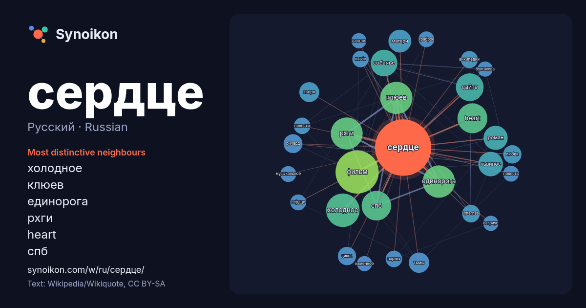

Русский · Russian · popular word
сердце
“heart” · The words found around it in 1158 instances from Russian Wikipedia, Wikiquote.

Most distinctive neighbours
- холодное 54×
- клюев 51×
- единорога 51×
- рхги 50×
- heart 42×
- спб 40×
- собачье 35×
- львиное 30×
- фильм 29×
- сайте 29×
- тьмы 20×
- зверя 19×
- роман 17×
- дикое 17×
- матери 16×
- internet 16×
- ричард 15×
- википедии 14×
- пармы 14×
- movie 14×
× = how many times more often than in general Russian Wikipedia text.
Most frequent neighbours
- фильм 90
- холодное 54
- единорога 50
- клюев 50
- рхги 49
- heart 43
- спб 42
- сайте 37
- собачье 34
- львиное 29
- роман 28
- матери 25
- человека 22
- трёх 21
- тьмы 20
- зверя 19
- название 17
- ричард 17
- дикое 16
- любви 16
In context
- в сердце. Сердце человека, сокращаясь в среднем 72 раза в минуту, на протяжении 66 лет совершит около 2,5 миллиардов сердечных циклов. Масса сердца у Wikipedia snippets · Сердце
- сердцу. Полость сердца разделена на два предсердия и два желудочка. Левое предсердие и левый желудочек в совокупности образуют «артериальное сердце» Wikipedia snippets · Сердце человека
- «Сердце зверя» (англ. Heart of the Beast) — американский триллер режиссёра Дэвида Эйера по сценарию Кэмерона Александера. Главную роль в фильме исполнил Wikipedia snippets · Сердце зверя (фильм)
- кинопрокатчика» — «Твое сердце будет разбито» получит продолжение Архивная копия от 28 апреля 2026 на Wayback Machine «КГ-портал» — Мелодрама «Твоё сердце будет разбито» Wikipedia snippets · Твоё сердце будет разбито
- Золото́е се́рдце: Фразеологизм «золотое сердце» (разг.) — о добром, щедром и великодушном человеке. «Золотое сердце» — студийный альбом Софии Ротару (1989) Wikipedia snippets · Золотое сердце
- Маргарита» и повести «Собачье сердце». «Собачье сердце», новеллы для камерного ансамбля Бориса Тищенко (1988) «Собачье сердце», опера Александра Раскатова Wikipedia snippets · Собачье сердце
- «Её сердце» (англ. A Mighty Heart) — биографическая драма режиссёра Майкла Уинтерботтома с Анджелиной Джоли в главной роли. Премьера фильма состоялась Wikipedia snippets · Её сердце
- «Сердце Зверя» — общее название заключающих томов фэнтези-сериала «Отблески Этерны» Веры Камши. Состоит из трёх книг: «Сердце зверя. Правда стали, ложь Wikipedia snippets · Сердце Зверя
More Russian words
- бог
- власть
- вода
- деньги
- жизнь
- здоровье
- золото
- искусство
- истина
- история
- климат
- кошка
- мост
- наука
- пища
- поезд
- природа
- работа
- семья
- смерть
- собака
- язык
Precomputed on 2026-10-09 with default settings (±5 words, medium corpus). The interactive map can refresh it with live data.